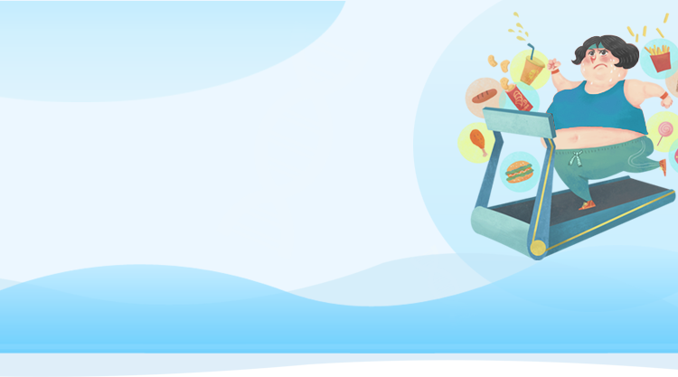
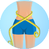
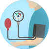
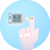
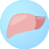
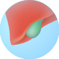
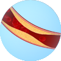

精准瘦身基因检测
肥胖风险
了解自身运动潜质，选择合适自己的运动方式。
肥胖倾向 >
低
中
高
食欲水平 >
食欲中等
食欲旺盛
代谢水平 >
代谢较快
代谢中等
代谢较慢
脂肪增重风险 >
不易增重
较易增重
容易增重
碳水化合物增重风险 >
不易增重
较易增重
容易增重
蛋白质增重风险 >
不易增重
较易增重
容易增重
睡眠对体重的影响 >
不易增重
容易增重
减重效果
了解自身运动潜质，选择适宜自己的运动方式。
有氧运动减脂效果 >
较好
中等
较差
力量运动塑形效果 >
很好
中等
较差
单不饱和脂肪酸减重效果 >
很好
中等
较差
膳食纤维需求 >
中等
较高
搞

减肥反弹风险 >
不易反弹
容易反弹
肥胖与疾病
了解自身运动潜质，选择适宜自己的运动方式。
肥胖症 >
1.06倍

高血压 >
1倍

2型糖尿病 >
1.07倍
痛风 >
0.28倍

非酒精性脂肪性肝病 >
1.58倍

胆结石 >
0.18倍

高甘油三酯血症 >
1.58倍
结直肠癌 >
0.26倍
冠心病 >
3.4倍
睡眠呼吸暂停 >
0.80倍
心肌梗死 >
2.88倍